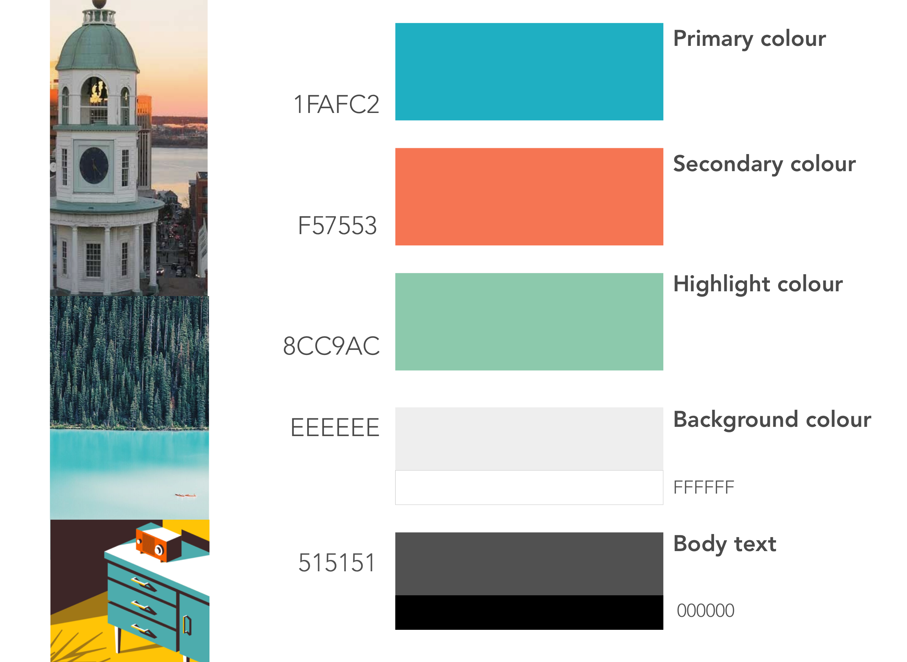
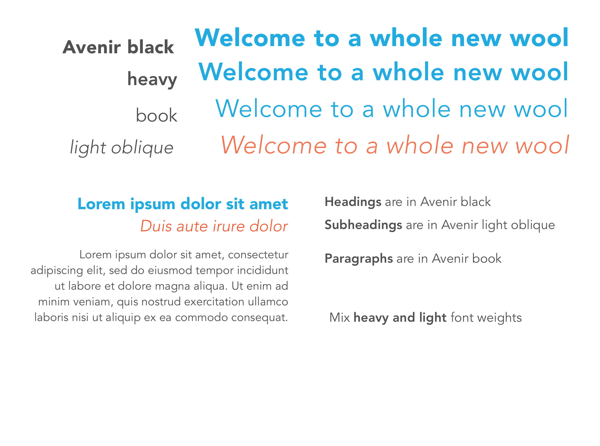

Revamping the Dashboard
Application for parking site managers
The client’s platform can allocate and monitor vehicle spaces across all sites, manage payments and process extensive tasks.
“simple, reliable, aspirational, established”
Below is a deep dive on how (and why) I chose to brand Blue Faced Leicester (BFL) wool, the best kind of wool you've likely never heard of.
research
Secondary research—I looked at competitors' price, product options, pitch, values, and partnerships. Reading into their history I found a common message about sustainability, community, and patriotism.

Common theme: Most of the companies had some form of design philosophy.
Theme and style—Evoking either athleticism or tradition, there was little overlap in style between brands. I saw an opportunity to blend attributes of both; warm tones with vector imagery.

Brands conveyed athleticism with bright colours, scenic photography, and vector images or tradition with soft colours, photos of families, and use of serif font types.
At this point, I discovered BFL wool, its rich Canadian history, and its high-quality features. Majority of the leading quality brands were from Europe, targeted to adults, with a predominately serious tone to their brand story. I saw another opportunity.
why not bring european standards to canadian youth markets?
The features of European brands combined with BFL wool's Nova Scotian history was the base for a story on heritage that was authentic, patriotic, and new. I deliberately chose a fun and playful brand image as an opportunity to stand out and connect with younger audiences.
vision & mission statement
Vision and mission statements bring authenticity to the brand. I used the descriptors' synonyms to brainstorm the brand's vision and mission statements.
Highlighted synonyms of each respective descriptor work well together to support the brand's name and style (its' Canadian history, quality wool, etc.)
Ultimately creating a statement that can guide the overall experience the users expect from the company.
What does it mean to be simple? In what ways is the [company, product] simple? What does it mean to be reliable?
The more authentic a company's branding and marketing → the more likely customers will feel a connection with the values the products are attempting to convey → the easier it is to design and build an experience to support that image.

With a mission statement, it is easier to create the voice and identity of the brand.
mood board & style guide

Images evoking: "50s feel". Inspired use of bright, warm, and soft colours in the style guide.

Images evoking: "fabric, humble, familiar, comfort". Inspired ideas on how to showcase wool on a web interface.

Images of "fabric, tradition, heritage". More logo inspiration, using a more minimal style.
kiss; keep it simple stupid
Despite enjoying the process of building each mood board I struggled because I had created too many, having put more work than necessary. As a solution, I looked for one common theme within each mood board and allowed it to represent a component of the brand.
Colour—The shades of blue, orange, and green work in harmony to show warmth, familiarity, and fun. They were inspired by the rich, vibrant colours used in products in the 1950s and the sunsets off the coasts of Nova Scotia.

Typography—Avenir was a good choice for a clear and minimal font that was versatile enough for written content (various weights) but clean and legible enough for showcasing products on all interfaces. It also does not distract from the logo's font.
logo
Letting go is hard
Diverging—Creating the logo was an extensive process. It was difficult to pick just one style and refine it, since every style could lead to a new kind of logo. At some point, I needed to stop having fun. I did user tests with a group of people to ultimately discover (and accept) that none of these were great.


Converging—Ultimately, it was the shape of the sheep and the background of the emblem that needed to change. The sheep had to look more welcoming, the emblem need to be modern. With the background inspired by a ball of yarn and the focus on a sheep looking at the audience; I'd finally created a personable logo that proved receptive with target users.

In order to balance the modern colours and vector style of the logo, I used a serif font, Cinzel. I wanted the font to look good whether it was abbreviated or lengthened.
I widened the space between the letters so it appears balanced next to the sheep icon.
ui elements
The design system was initially inspired by how wool overlaps each other, creating knots and shadows yet are simple and clean at its core.
I wanted to illustrate simplicity and functionality with vivid icons and buttons that invited the user to touch/tap for visual feedback.
 Eventually using the design system to put together a layout that creates a fun and playful visual shopping experience
with reactions to user inputs that are as playful as the brand.
Eventually using the design system to put together a layout that creates a fun and playful visual shopping experience
with reactions to user inputs that are as playful as the brand.